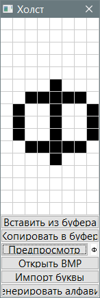

Grub4Dos-Font
Назначение
Создание шрифта для Grub4Dos.

Описание
Так как кириллица и другие не латинские написания не поддерживается при загрузки Grub4Dos, то шрифт сделан в виде растровых картинок букв, а в конфигурационном файле menu.lst указан их код.
Самый быстрый способ создать алфавит - нажать кнопку "Генерировать алфавит", ввести символы в поле ввода и получить код для вставки в menu.lst.
Кнопки "Вставить из буфера" и "Копировать в буфер" работает с шестнадцатеричной последовательностью.
Кнопка "Предпросмотр" показывает букву в реальном размере, но так как при загрузке экран 640x480 то шрифт будет трансформирован и будет выглядеть крупнее, если только не задано другое разрешение экрана.
Кнопка "Открыть BMP" откроет растровый рисунок - bmp-файл.
Кнопка "Импорт буквы" даёт возможность изменить шрифт (имя, размер, начертание). Также выбор здесь меняет текущий выбранный шрифт для "Генерировать алфавит"
Можно захватить буквы создав их в графическом редакторе, например Gimp, шрифт Monospace 12. Создать рисунок 8х16, вводить буквы и сохранять в bmp-файл, далее открывая в утилитке.
Чтобы узнать код буквы (четырёх-значный шестнадцатеричный), открываем "Таблица символов", вот путь к ней C:\Windows\System32\charmap.exe. Кликаем 4 раза в прокрутке и внизу 2 последние строки показывают заглавные буквы, там же чуть ниже и строчные буквы. Клик на букве показывает код в строке состояния, например для "А" это будет 0410, для "я" - 044F.
Результатом будет список букв в виде
0410:000000183C6666667E66666600000000
0411:0000007E62607C666666667C00000000
Где 0410 это код символа, а шестнадцатеричная последовательность это bitmap из белого/чёрного цвета в виде 0/1.